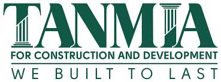

TANMIA FOR CONSTRUCTION AND DEVELOPMENT

Projects Manager
03/2022 - 01/2023
Residential , warehouses (steel structures),hospital buildings
Managed and allocated tasks among 13+ engineers, tailoring projects
to individual expertise, elevating project completion rate by 15%.
Monitoring project performance in terms of quality, time, and budget
and taking necessary actions timely and regularly updating the client
and senior management on the project's status.
Manage assigned project(s) from start to finish in accordance with the
time schedule. Milestones, budget and resources needed.
The speed of making the right decisions and problem solving.
Make a full description of the items from the technical point of view.
Monitors and reviews all proposed project schedules, Invoices, Deviations of the
engineering drawings in the actual Implementation and gives guidance to solve the deviations.
Evaluates the speed of the performance of the technical office and the credits.
Monitoring and reviewing the completion rates for each project.
Studying the technical aspects of the projects, presenting them to the senior management in detail,
and proposing possible technical solutions for discussion and decision-making.
Monitoring and reviewing cost deviations and implementation obstacles and removing obstacles.
Measuring deviations of implementation performance from the schedule and overcoming obstacles.
Reviewing the volume of daily work implementation according to the plans and linking them to the extracts.
Attending the periodic meetings of the consultants or the owner and solving all problems in
a way that does not conflict with the technical competence.
Review and monitor conflicts arising with physical installations and NCR site.
Evaluates the performance of subordinate employees and evaluates the work in general
in the subordinate departments.